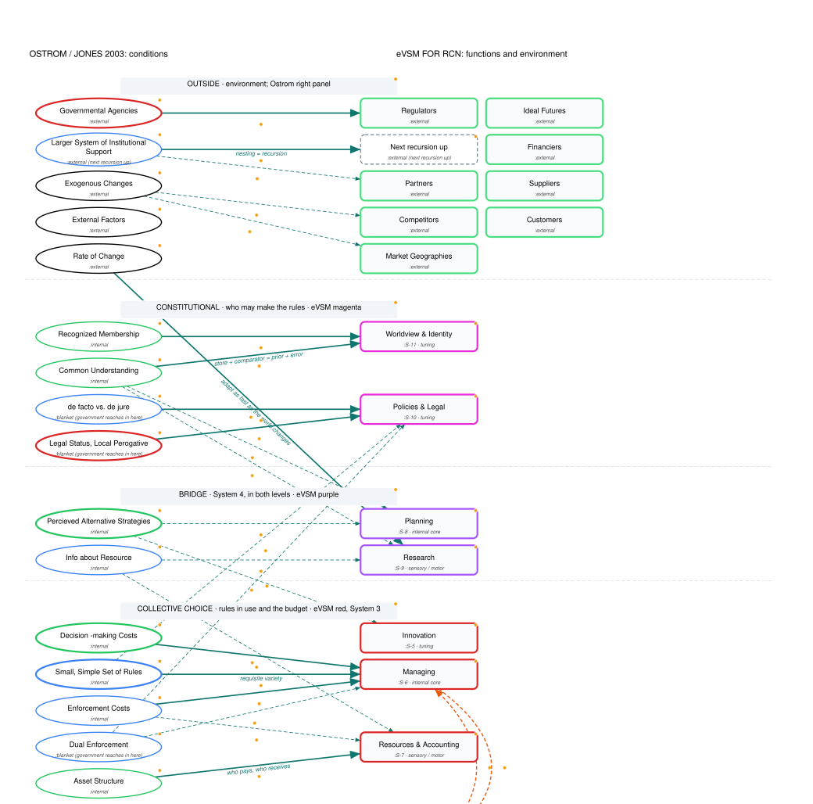
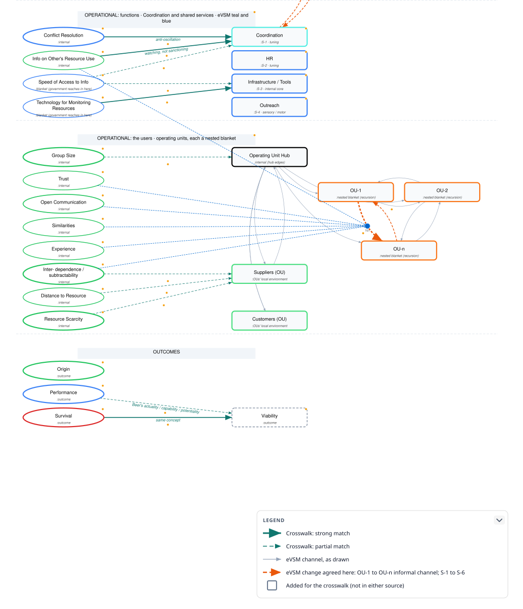
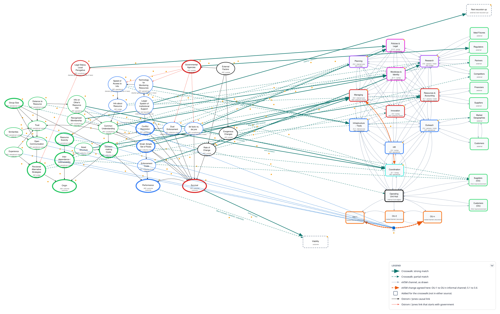

Ostrom's model, as Eric Jones redrew it in 2003, is about what lets a collective-action institution come into being, last, and perform. The eVSM (extended Viable System Model) is about what any institution must do to stay viable. If both are right, they should overlap heavily. This note sets out where, using two sources: Jones's figure as redrawn in the RCN Graph Tool (Ostroms Collective Action in 3 phases) and Marc's eVSM plus environment for RCN.
The short answer: the overlap is large. It sits mostly in Ostrom's Survival phase, partly in Performance, and there is almost none in Origin. The VSM assumes the system already exists; Origin is about whether it forms at all.
| Ostrom / Jones | eVSM |
|---|---|
| Left panel: the users and the resource | The operating units (OU-1 … OU-n, the Operating Unit Hub) and their local environments |
| Center panel: the institution's practicalities | The metasystem: spheres S-1 to S-11 |
| Right panel: external factors | The environment column (Regulators, Partners, Competitors, Financiers, Ideal Futures …) |
Jones puts Common Understanding and Decision-making Costs in the users' panel, not the institution's. In a commons the users do their own steering. Beer says the same: the metasystem is a set of functions, not a separate class of people. Ostrom's design principle 3 (the people affected by the rules help make them) is what that looks like in practice.
Matching nodes to nodes, these four looked weakly covered. They are not properties of any sphere; they are properties of the channels. Every sphere-to-sphere link in the eVSM runs both ways (33 of the 55 possible sphere pairs are linked, 50 two-way pairs in all), and the quality of those two-way links is where Ostrom's social variables sit:
RCN's own instruments already read these edges: the Agree / Disagree / Unknown edge ratings and the Block G "who you work with" network in the eVSM measures specification.
The specific channels that carry them between users are the informal OU-to-OU links, and that is where most of the variety is handled. The current eVSM drawing links OU-1 to OU-2 and OU-2 to OU-n but not OU-1 to OU-n. Marc will redraw it with an informal channel between every pair of operating units.
Two limits. Asset Structure is about how holdings are divided, not about a relationship, so it belongs with Resources & Accounting (S-7), in who pays and who receives. And Origin comes before the edges exist: Ostrom's left panel describes how channels get built; the VSM describes channels that are working.
Ostrom supplies the argument for folding monitoring into Coordination (S-1). In working commons the monitors are the users themselves or answer to them (design principle 4). That makes monitoring a sideways, peer activity with the same shape as coordination. Jones's own causal chain runs the same way: Info on Others' Resource Use → Common Understanding ↔ Conflict Resolution.
The condition is to combine the watching, not the sanctioning. Sanctions stay with Managing (S-6) and Policies & Legal (S-10). Beer kept coordination (System 2) and audit (System 3*) apart for a reason: operations share information freely with a coordinator who serves them, and stop once the coordinator is also the inspector. If peers collude and nobody reports, Ostrom's backstop is Dual Enforcement, with Regulators outside.
Beer describes two levels of coordination: operating units coordinating directly with each other, and above them a coordination function that System 3 runs. That second level is an S-1 to S-6 link, which the current drawing does not have. It is needed; how to draw it is still open.
| Ostrom level | eVSM spheres |
|---|---|
| Constitutional | S-10 Policies & Legal, S-11 Worldview & Identity (magenta) |
| Bridge | S-8 Planning, S-9 Research (purple): System 4, in both levels |
| Collective choice | S-5 Innovation, S-6 Managing, S-7 Resources & Accounting (red): System 3, where the budget is made, "taxes" collected and redistributed |
| Operational | The operating units, S-1 Coordination (teal), and the shared services S-2 HR, S-3 Infrastructure / Tools, S-4 Outreach (blue), which bridge System 3 and the operating units |
Marc reads the eVSM as a Markov blanket that minimizes free energy (Friston). The sensory / motor states are S-4, S-7 and S-9; the tuning layer is S-1, S-2, S-5, S-10 and S-11; S-3, S-6 and S-8 are the internal core, the layer the eVSM introduction already calls the "internal core layer." Every operating unit is a smaller blanket of its own, one level of recursion down. The drawings mark each node's blanket role.
The blanket holds in the current file: every environment node connects only to S-4, S-7 or S-9. That is also why Regulators should reach Policies & Legal through Research rather than directly. Internal states may not touch the outside.
Ostrom fits this reading closely:
strong same function or condition · partial overlapping · channel carried by the informal OU-to-OU edges, not by a sphere
| Ostrom node | eVSM counterpart | Why | |
|---|---|---|---|
| Outside | |||
| Governmental Agencies | Regulators | strong | The most organized outside actor; reaches the eVSM through Research (S-9). |
| Exogenous Changes | Competitors, Market Geographies | partial | Shocks arrive through the environment column. |
| Rate of Change | S-9 Research | strong | Beer defines viability as adapting as fast as the environment changes. |
| Larger System of Institutional Support | The next recursion up; Partners | strong | Nested enterprises (design principle 8) are Beer's recursion. |
| External Factors | The environment column as a whole | partial | A heading, not a single node. |
| Constitutional | |||
| Recognized Membership | S-11 Worldview & Identity | strong | Clear boundaries (design principle 1): who is inside, where the blanket is. |
| Common Understanding | S-11; also S-9, S-8 | strong | Store plus comparator: the shared model, prior plus error. |
| Legal Status, Local Prerogative | S-10 Policies & Legal | strong | Legal standing, handled with Regulators through S-9. |
| de facto vs. de jure | S-10 Policies & Legal | strong | Whether the rules in use are the rules the state recognizes. |
| Bridge | |||
| Perceived Alternative Strategies | S-8 Planning, S-5 Innovation | partial | The options the group can see, and the ones it can invent. |
| Info about Resource | S-9 Research, S-7 Resources & Accounting | partial | Sensing the resource; S-7 as measurement. |
| Collective choice | |||
| Small, Simple Set of Rules | S-6 Managing; bounded by S-10 | strong | Requisite variety. The strongest single match, the hinge between the two models. |
| Enforcement Costs | S-6 Managing; S-7 | strong | Sanctioning is decided here and paid from the budget. |
| Decision-making Costs | S-6 Managing | strong | The cost of running the collective-choice arena. Group Size raises it: more variety for the metasystem to absorb. |
| Asset Structure | S-7 Resources & Accounting | strong | Who pays and who receives: the budget and its redistribution. |
| Dual Enforcement | S-6 Managing, S-10 Policies & Legal | partial | Local enforcement backed from outside; the backstop when peer monitoring fails. |
| Operational: functions | |||
| Conflict Resolution | S-1 Coordination | strong | Cheap, routine dispute handling is System 2: damping oscillation between units. |
| Info on Others' Resource Use | S-1 Coordination; the OU-to-OU channels | strong | Peer monitoring: the watching, not the sanctioning. |
| Technology for Monitoring Resources | S-3 Infrastructure / Tools | strong | Instruments that make the resource observable are shared tools. |
| Speed of Access to Info | S-3; S-1 | partial | The delay, not the data, is the variable. |
| Operational: the users | |||
| Trust, Open Communication, Similarities, Experience | The informal OU-to-OU channels | channel | Properties of edges, not spheres (position 1 above). |
| Interdependence / subtractability | OU-to-OU channels; Suppliers (OU) | channel | Units drawing on the same resource have overlapping local environments, which is why they oscillate and need coordination. |
| Group Size | Operating Unit Hub | partial | How many operating units the metasystem must absorb. |
| Distance to Resource, Resource Scarcity | Suppliers (OU) | partial | The operating units' shared local environment. |
| Outcomes | |||
| Survival | Viability | strong | The same concept. |
| Performance | Viability | partial | What viability buys; Beer measures it with actuality, capability and potentiality. |
| Origin | None | The VSM assumes the system exists. | |
Both are built in the RCN Graph Tool; the JSON files open there for editing. Hovering any node or line in the tool, or in the SVG files, shows the reasoning behind it.
Banded by level (next two pages): Ostrom on the left, the eVSM on the right, one band per level. It gives up the eVSM's geometric shape so the crosswalk lines never cross a node. The sphere-to-sphere mesh and environment couplings are left out; they are in the as-drawn view. The small italic line on each node gives its blanket role.
As drawn (the landscape page): both source diagrams with their own positions and links unchanged, joined by the crosswalk. It is busy on purpose: it shows where each source puts things. Each node's small italic lines give its IAD level and blanket role.



docs/evsm-intro.html, docs/evsm-measures-spec.html.docs/ostrom-evsm/: ostrom-evsm-banded.json and ostrom-evsm-as-drawn.json (editable), each with .svg and .png exports.